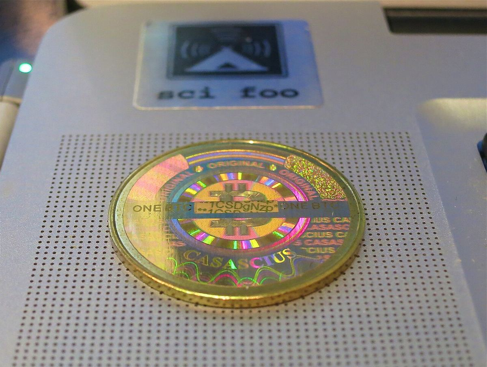
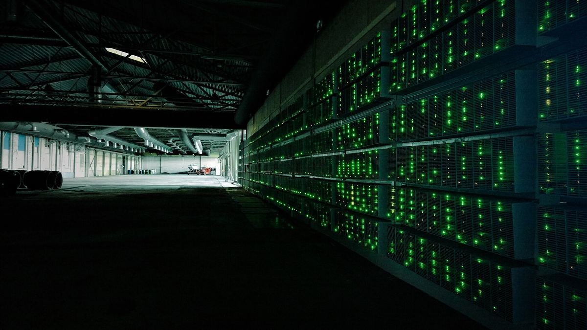
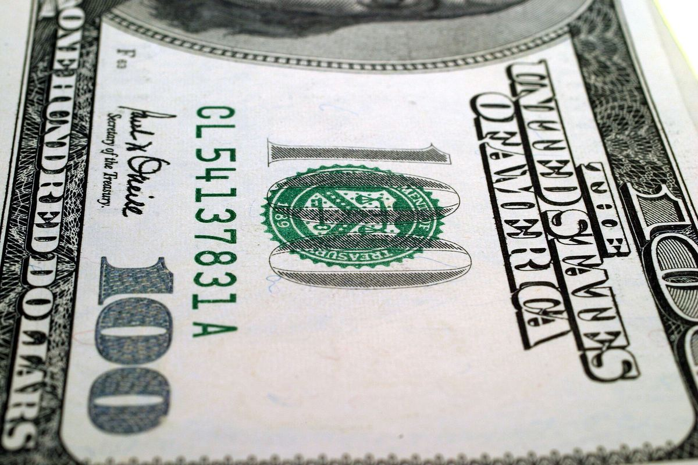
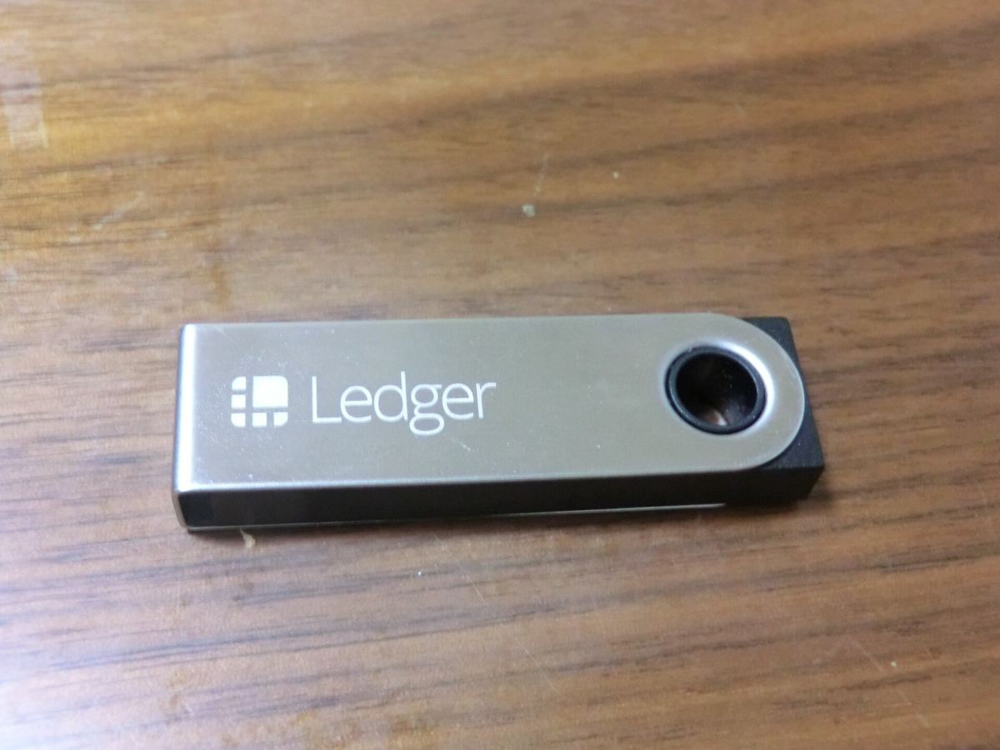
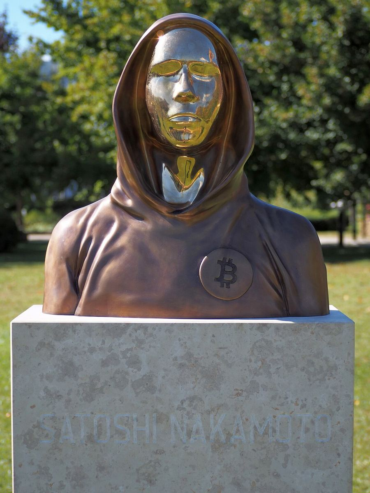

Edukasi cryptoCrypto basics
Dasar-dasar crypto dalam bahasa sederhana: Bitcoin, halving, stablecoin, dan cara menyimpan aset dengan aman. Penjelasan umum, bukan saran finansial.Crypto basics in plain language: Bitcoin, the halving, stablecoins, and how to store assets safely. General explanations, not financial advice.

Kenapa Bitcoin cuma ada 21 juta?Why will there only ever be 21 million Bitcoin?
Pasokan Bitcoin dibatasi oleh aturan protokol, bukan oleh satu perusahaan. Ini cara batas 21 juta bekerja.Bitcoin's supply is capped by protocol rules, not by a single company. Here is how the 21 million cap works.

Apa itu halving Bitcoin?What is the Bitcoin halving?
Halving memotong hadiah blok Bitcoin separuh setiap 210.000 blok. Ini riwayat dan jadwal berikutnya.The halving cuts Bitcoin's block reward in half every 210,000 blocks. Here is its history and the next date.

Stablecoin: apa itu, jenisnya, dan risikonyaStablecoins: what they are, the types, and the risks
Stablecoin dirancang menjaga nilai stabil, umumnya dipatok ke dolar AS. Stabil bukan berarti bebas risiko.Stablecoins are designed to keep a stable value, usually pegged to the US dollar. Stable does not mean risk-free.

Hot wallet vs cold wallet: bedanya apa?Hot wallet vs cold wallet: what's the difference?
Hot wallet terhubung ke internet, cold wallet disimpan offline. Masing-masing punya risiko sendiri.A hot wallet is connected to the internet, a cold wallet is kept offline. Each has its own risks.

Sejarah: 5 tahun lalu, Bitcoin cetak rekor dekat US$69.000 di hari inflasi AS tembus 6,2%History: 5 years ago, Bitcoin set a record near US$69,000 on the day US inflation hit 6.2%
Pada 10 November 2021, Bitcoin mencetak rekor tertinggi saat itu di sekitar US$68.950, tak lama setelah data inflasi AS keluar di level tertinggi sejak 1990. Setahun kemudian, harganya jatuh ke US$15.480. Ini kisahnya, dan kenapa hari ini terasa mirip.On 10 November 2021, Bitcoin set its then-record high of about US$68,950, shortly after US inflation data came out at its highest level since 1990. A year later, its price fell to US$15,480. Here is the story, and why today feels similar.

Misteri: 1,1 juta Bitcoin milik Satoshi yang tak pernah bergerak, dan kenapa komputer kuantum ikut dibahasMystery: Satoshi's 1.1 million Bitcoin that have never moved, and why quantum computers come up
Pencipta Bitcoin, Satoshi Nakamoto, diperkirakan memegang sekitar 1,1 juta BTC yang tidak pernah dipindahkan sejak awal Bitcoin. Siapa Satoshi masih misteri. Kini koin-koin itu ikut dibahas dalam diskusi soal risiko komputer kuantum. Ini faktanya, dan mana yang masih teori.Bitcoin's creator, Satoshi Nakamoto, is estimated to hold about 1.1 million BTC that have never been moved since Bitcoin's early days. Who Satoshi is remains a mystery. Now those coins are also part of the discussion about quantum computing risk. Here are the facts, and what is still theory.
Edukasi: Kenapa suku bunga The Fed dan yield obligasi AS yang naik bisa menekan crypto, saham, dan rupiah?Learn: Why rising Fed rates and US bond yields can weigh on crypto, stocks and the rupiah
Belakangan ini berita crypto sering dibuka dengan kata "The Fed", "CPI", dan "yield 10 tahun". Apa hubungannya dengan harga Bitcoin dan kurs rupiah? Ini penjelasan sederhana soal suku bunga, yield obligasi, dan cara keduanya memengaruhi aset berisiko, lengkap dengan batasannya.Lately, crypto news often opens with the words "the Fed", "CPI" and "10-year yield". What do they have to do with the Bitcoin price and the rupiah exchange rate? Here is a simple explanation of interest rates, bond yields and how both affect risk assets, including their limits.
Edukasi dari liputan kamiLessons from our coverage
Whitepaper Bitcoin genap 18 tahun hari iniThe Bitcoin whitepaper turns 18 today
Pada 31 Oktober 2008, Satoshi Nakamoto mengumumkan paper sembilan halaman tentang uang elektronik peer-to-peer.On 31 October 2008, Satoshi Nakamoto announced a nine-page paper on peer-to-peer electronic cash.

Trezor Safe 5 dari Tokopedia diduga dipasangi alat penyadapTrezor Safe 5 bought on Tokopedia allegedly fitted with a spy implant
Trezor menilai laporan implan perangkat keras pada Trezor Safe 5 dari seorang pembeli di Indonesia kredibel, namun belum memeriksa perangkatnya di lab.Trezor considers a report of a hardware implant in a Trezor Safe 5 from a buyer in Indonesia credible, but has not yet examined the device in its lab.
Ikuti COIN BRO diFollow COIN BRO on Telegram
Edukasi singkat setiap hari di Telegram, Instagram, dan TikTok. Gratis.Short daily lessons on Telegram, Instagram and TikTok. Free.